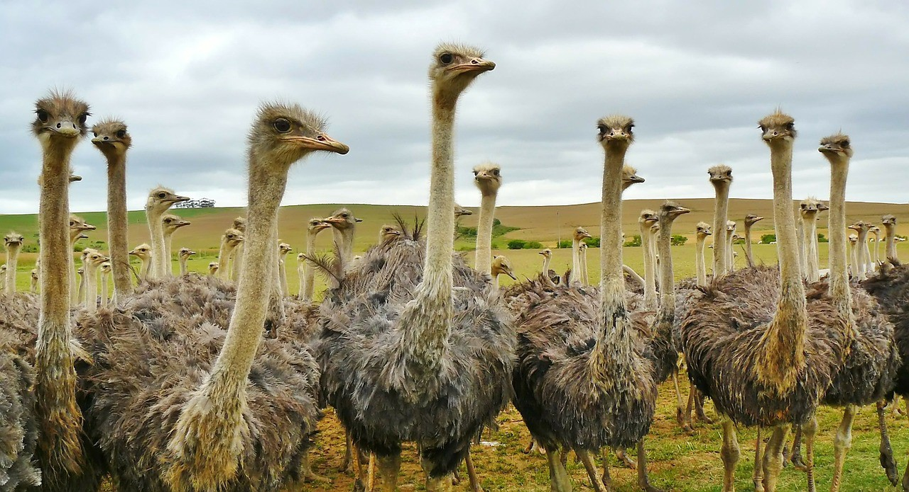

cultura
falaremos aqui sobre a participação de avestruzes nas maiores obras de literatura e cinema que existem... só que não.
a participação de avestruzes na mídia é bem pequena, e somos associados a
está na hora de mudarmos isso!
alguns links para começar a lista:
| mídia | nome | descrição |
|---|---|---|
| filme | prince of persia | alguns dos meus primos fizeram um bico na corrida de avestruzes do filme |
| livro | ostrich by matt greene | por mais que tenha avestruz no nome, esse livro é sobre crianças, mas quis notá-lo aqui, me disseram coisas boas sobre ele |
| personagem | blablabla | é dificil encontrar avestruzes famosas |
| personagem | revoltante | a gente é tachado de desengonçado, pescoçudo e medroso |
| personagem | pompa | por isso a gente não é escolhido para ser personagem principal de nada |
| personagem | wayne no deserto | por exemplo, meu primo wayne tentar a vida boa de vegas e se deu muito bem |
| personagem | altras granas | soube que ele tava numa vida boa lá, que morava em apartamento e faturava a maior grana |
| personagem | tráfico de drogas | mas que nada, o cara tava era um dos comandantes em vegas, mexia tudo por trás das cortinas |
| personagem | fim trágico | depois de um tempo fiquei sabendo que ele morreu em uma negociação de malote que se tornou em uma emboscada |
| personagem | wayne meu bro | mas eu sei que no final, sua história não será contada, porque nós avestruzes somos injustiçadas! |